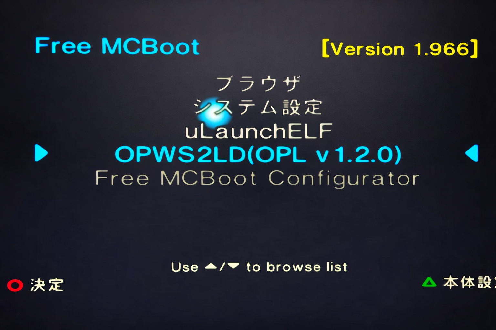
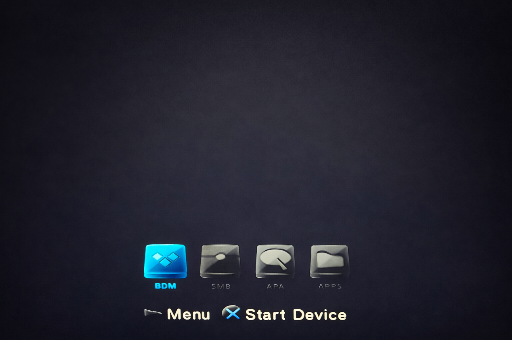

OPL + MX4SIO でのPS2北斗の拳マニュアル
1. メモリーカードの挿入位置
- スロット1にFMCB、スロット2にMX4SIOを挿入する。

2. 起動方法
- PS2を起動し、「OPWS2LD(OPL v1.2.0)」を選択する 
- BDMを選択した状態でStart Deviceを押下する 
- hokutoを選択した状態でRunを押下する
-
使用するチートコードを選んでRunを押下する
()内の数字がコード行数。足して250に収まるように選ぶ


3. チートコードの追加の仕方
- MX4SIOに刺さっているSDカードをPCに接続する。(カードリーダーが必要)
- CHTフォルダ内にあるSLPM_666.60.chtをメモ帳などで開く
-
追加したいチートコードのタイトルとコードを書き込む。
(タイトル単位でチートコードON/OFFが可能)


-
チートコードは復号した形式を記載します。
本サイト記載のコードは暗号化されているため復号する必要があります。
変換サイト